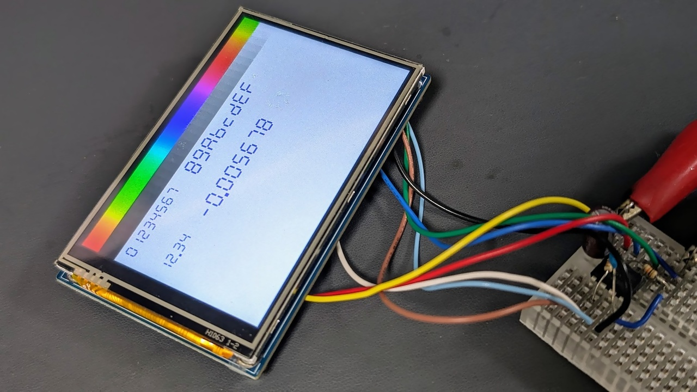

[C++] デバッグ用 7 セグ描画関数

少ない RAM/ROM で 10 進数や 16 進数を 7 セグ LED 風に描画するための関数です。シリアル I/F などの文字出力機能は無いけど長方形は塗りつぶせる、という謎の状況で使えます。
長方形を塗りつぶす関数があらかじめ必要です。
ソースコード
#pragma once
#include <stdint.h>
#ifdef SEG7_USE_PROGMEM
#include <avr/pgmspace.h>
#define SEG7_PROGMEM PROGMEM
#define seg7_pgmReadByte pgm_read_byte
#else
#define SEG7_PROGMEM
#define seg7_pgmReadByte(addr) (*(const uint8_t*)(addr))
#endif
#ifdef SEG7_INCLUDE_AS_STATIC
#define SEG7_FUNC_MOD static
#else
#define SEG7_FUNC_MOD
#endif
#ifndef SEG7_POS_TYPE
#define SEG7_POS_TYPE int16_t
#endif
#if defined(SEG7_INCLUDE_AS_STATIC) || !defined(SEG7_INCLUDE_IMPL)
#define SEG7_DOT_POS_DFLT = -1
#define SEG7_NUM_DIG_DFLT = 2
#else
#define SEG7_DOT_POS_DFLT
#define SEG7_NUM_DIG_DFLT
#endif
namespace seg7 {
using pos_t = SEG7_POS_TYPE;
static constexpr uint8_t SEG7_NEG_SIGN = 16;
static constexpr uint8_t SEG7_DOT_MASK = 0x80;
SEG7_FUNC_MOD void fillRect(pos_t x, pos_t y, uint8_t w, uint8_t h);
#ifdef SEG7_INCLUDE_IMPL
static const uint8_t SEG7_LUT[] SEG7_PROGMEM = {
0x3F, 0x06, 0x5B, 0x4F, 0x66, 0x6D, 0x7d, 0x07, 0x7f, 0x6f, 0x77, 0x7c,
0x58, 0x5e, 0x79, 0x71, 0x40, 0x01, 0x1d, 0x5d, 0x81, 0x58, 0x18, 0x41};
#endif
#ifdef SEG7_FIXED_SIZE
static constexpr uint8_t digSize = SEG7_FIXED_SIZE;
#else
static uint8_t digSize = 1;
SEG7_FUNC_MOD void setDigitSize(uint8_t size)
#ifdef SEG7_INCLUDE_IMPL
{
digSize = size;
}
#else
;
#endif
#endif
SEG7_FUNC_MOD pos_t drawDigit(pos_t x, pos_t y, uint8_t dig)
#ifdef SEG7_INCLUDE_IMPL
{
uint8_t size = digSize;
uint8_t seg = seg7_pgmReadByte(&SEG7_LUT[dig & 0x01f]);
for (uint8_t iseg = 0; iseg < 7; iseg++) {
if (seg & 1) {
uint8_t pos = seg7_pgmReadByte(&SEG7_LUT[17 + iseg]);
pos_t segX = x + size * (pos & 0x07);
pos_t segY = y + size * ((pos >> 4) & 0x0f);
bool vertical = 0 != (pos & 0x08);
uint8_t segW = vertical ? size : (size * 4);
uint8_t segH = vertical ? (size * 3) : size;
fillRect(segX, segY, segW, segH);
}
seg >>= 1;
}
if (dig & SEG7_DOT_MASK) {
uint8_t dotSize = size * 2;
fillRect(x + size * 7, y + 8 * size, dotSize, dotSize);
x += dotSize;
}
return x + size * 8;
}
#else
;
#endif
SEG7_FUNC_MOD pos_t drawString(pos_t x, pos_t y, const uint8_t* digs,
uint8_t len)
#ifdef SEG7_INCLUDE_IMPL
{
for (uint8_t idig = 0; idig < len; idig++) {
x = drawDigit(x, y, digs[idig]);
}
return x;
}
#else
;
#endif
SEG7_FUNC_MOD pos_t drawHex32(pos_t x, pos_t y, uint32_t val,
int8_t numDigs SEG7_NUM_DIG_DFLT)
#ifdef SEG7_INCLUDE_IMPL
{
constexpr uint8_t BUFF_LEN = sizeof(val) * 2;
uint8_t digs[BUFF_LEN];
int8_t i = BUFF_LEN;
do {
digs[--i] = val & 0x0F;
val >>= 4;
} while (--numDigs > 0 || val != 0);
return drawString(x, y, digs + i, BUFF_LEN - i);
}
#else
;
#endif
SEG7_FUNC_MOD pos_t drawDec32(pos_t x, pos_t y, int32_t val,
int8_t dotPos SEG7_DOT_POS_DFLT)
#ifdef SEG7_INCLUDE_IMPL
{
// sizeof(T) * log(256) / log(10) + 1
constexpr uint8_t BUFF_LEN = (sizeof(val) * 616 + 255) / 256 + 1;
bool neg = val < 0;
if (neg) val = -val;
uint8_t digs[BUFF_LEN];
uint8_t i = BUFF_LEN;
do {
digs[--i] = val % 10;
val /= 10;
if (dotPos-- == 0) {
digs[i] |= SEG7_DOT_MASK;
}
} while (val > 0 || dotPos >= 0);
if (neg) {
digs[--i] = SEG7_NEG_SIGN;
}
return drawString(x, y, digs + i, BUFF_LEN - i);
}
#else
;
#endif
#ifdef SEG7_PROGMEM
#undef SEG7_PROGMEM
#endif
#ifdef seg7_pgmReadByte
#undef seg7_pgmReadByte
#endif
} // namespace seg7
プロジェクトへの追加方法
単一のモジュールから呼び出す場合
ひとつの C++ ソースコードの中だけで使いたい場合は、次のようにしてインクルードすると、最適化が最大限効くように全ての関数定義が static 関数としてインクルードされます。長方形描画関数 fillRect() の実装は含まれませんので、アプリ側で定義します。
#define SEG7_INCLUDE_IMPL
#define SEG7_INCLUDE_AS_STATIC
#include <seg7.hpp>
// 長方形描画関数は自分で定義
SEG7_FUNC_MOD void seg7::fillRect(seg7::pos_t x, seg7::pos_t y, uint8_t w,
uint8_t h) {
display.fillRect(x, y, w, h, 0x001f);
}
pos_t は座標値の型で、int16_t のエイリアスです。
複数のモジュールから呼び出す場合
複数モジュールから参照するために独立したモジュールとしてコンパイルする場合は、次のようなソースコードを追加し、アプリ側のインクルードは何もマクロを付けずに行います。
#define SEG7_INCLUDE_IMPL // AVR の場合は SEG7_USE_PROGMEM を追加: // #define SEG7_USE_PROGMEM #include "seg7.hpp"
fillRect() はアプリ側で定義します。SEG7_USE_PROGMEM は追加した cpp 側で定義します。
#include <seg7.hpp>
// 長方形描画関数は自分で定義
SEG7_FUNC_MOD void seg7::fillRect(seg7::pos_t x, seg7::pos_t y, uint8_t w,
uint8_t h) {
display.fillRect(x, y, w, h, 0x001f);
}
使用方法
16進描画
座標と描画したい数値を指定するだけです。
pos_t seg7::drawHex32(
pos_t x,
pos_t y,
uint32_t value,
int8_t numDigs = 2
);
| 引数 | 説明 |
|---|---|
x, y |
7 セグ数字列の左上隅の座標 |
value |
表示する数字 |
numDigs |
最小桁数。この値に満たない数値はゼロパディングされる |
| 戻り値 | 7 セグ数字列の右端の X 座標 |
10進描画
基本的に整数表示ですが、dotPos に小数点以下の桁数を指定することで擬似的に小数を表示できます。
pos_t seg7::drawDec32(
pos_t x,
pos_t y,
int32_t value,
int8_t dotPos = -1
);
| 引数 | 説明 |
|---|---|
x, y |
drawHex32 と同じ |
value |
drawHex32 と同じ |
dotPos |
小数点を表示する場合に小数点以下の桁数。ゼロ未満の場合は小数点無し |
| 戻り値 | drawHex32 と同じ |
文字サイズ指定
SEG7_SEG7_FIXED_SIZE が指定されていない場合のみ使用できます。
void setDigitSize(uint8_t size);
| 引数 | 説明 |
|---|---|
size |
7 セグ数字列の大きさ。1 が最小。高さ 8×sizepx で描画される |
| 戻り値 | 無し |
チューニング
AVR の PROGMEM を使用する
AVR の場合は seg7.hpp をインクルードする前に SEG7_USE_PROGMEM を定義すると、7 セグデコード用のテーブルが Flash ROM に配置され RAM 消費を若干節約できますが、Flash ROM を参照する命令が増えるため Flash の消費量は増えます。
#define SEG7_INCLUDE_IMPL #define SEG7_INCLUDE_AS_STATIC #define SEG7_USE_PROGMEM #include <seg7.hpp>
座標値の型を変更する
デフォルトでは pos_t は int16_t として定義されています。
値の精度が足りない場合や逆に削減したい場合は、seg7.hpp をインクルードする前に SEG7_POS_TYPE を定義することで型を変更できます。
#define SEG7_INCLUDE_IMPL #define SEG7_INCLUDE_AS_STATIC #define SEG7_POS_TYPE int8_t #include <seg7.hpp>
文字サイズを固定する
文字サイズを変更する必要が無い場合は、seg7.hpp をインクルードする前またはコンパイルオプションにて SEG7_FIXED_SIZE を定義することで固定できます。これにより若干コードサイズを削減できます。setDigitSize() は使用できなくなります。
#define SEG7_INCLUDE_IMPL #define SEG7_INCLUDE_AS_STATIC #define SEG7_FIXED_SIZE 2 #include <seg7.hpp>
フットプリント
ATtiny85 + avr-g++ では次のような感じでした。16 進表示のみだと除算が無いのでだいぶ小さくなります。文字サイズを 1 に固定すると乗算も無くなります。
| 文字サイズ 1 固定 |
16進 表示 |
10進 表示 |
PROG MEM |
独立 モジュール |
ROM [Bytes] |
RAM (静的) [Bytes] |
|---|---|---|---|---|---|---|
| ✔ | ✔ | ✔ | 302 | 0 | ||
| ✔ | ✔ | 314 | 1 | |||
| ✔ | ✔ | 482 | 1 | |||
| ✔ | ✔ | ✔ | 738 | 1 | ||
| ✔ | ✔ | 714 | 25 | |||
| ✔ | ✔ | ✔ | ✔ | 960 | 1 |